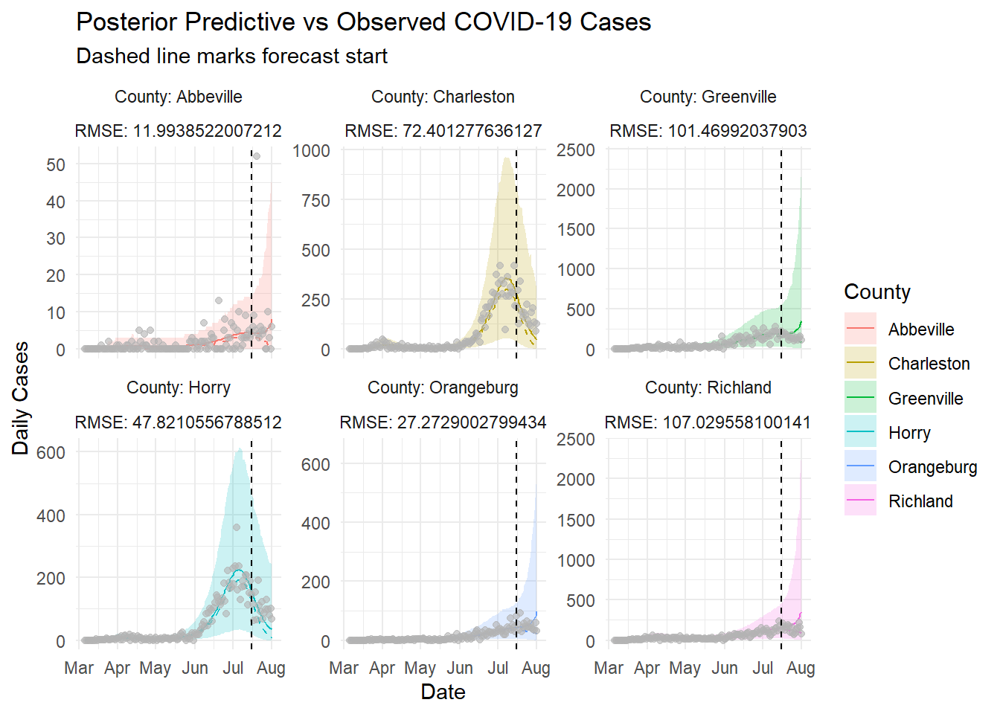
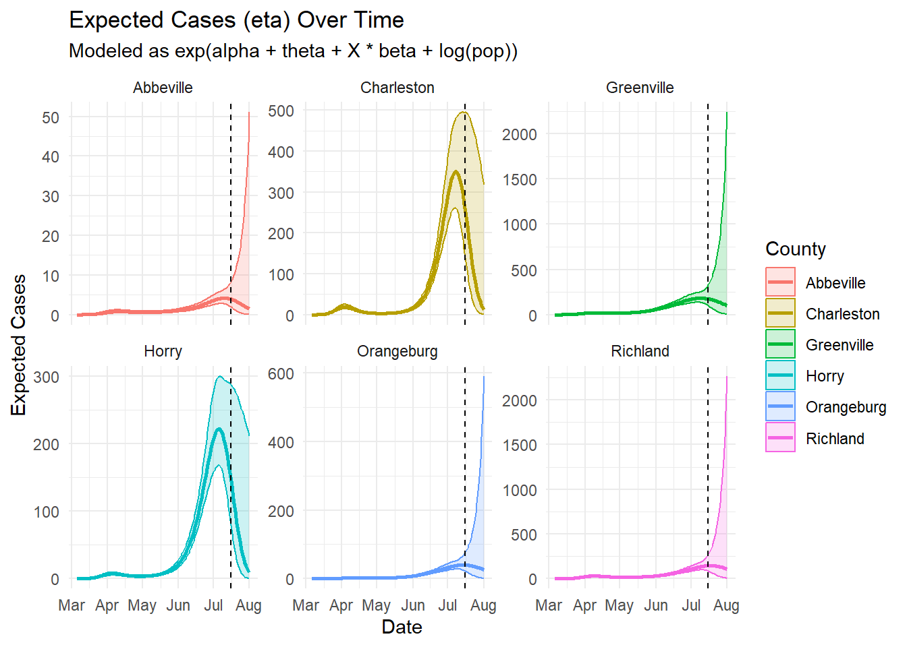

Last updated: 2025-04-27
Checks: 7 0
Knit directory: myproject_scframework/
This reproducible R Markdown analysis was created with workflowr (version 1.7.1). The Checks tab describes the reproducibility checks that were applied when the results were created. The Past versions tab lists the development history.
Great! Since the R Markdown file has been committed to the Git repository, you know the exact version of the code that produced these results.
Great job! The global environment was empty. Objects defined in the global environment can affect the analysis in your R Markdown file in unknown ways. For reproduciblity it’s best to always run the code in an empty environment.
The command set.seed(20241205) was run prior to running
the code in the R Markdown file. Setting a seed ensures that any results
that rely on randomness, e.g. subsampling or permutations, are
reproducible.
Great job! Recording the operating system, R version, and package versions is critical for reproducibility.
Nice! There were no cached chunks for this analysis, so you can be confident that you successfully produced the results during this run.
Great job! Using relative paths to the files within your workflowr project makes it easier to run your code on other machines.
Great! You are using Git for version control. Tracking code development and connecting the code version to the results is critical for reproducibility.
The results in this page were generated with repository version 9dd8b0a. See the Past versions tab to see a history of the changes made to the R Markdown and HTML files.
Note that you need to be careful to ensure that all relevant files for
the analysis have been committed to Git prior to generating the results
(you can use wflow_publish or
wflow_git_commit). workflowr only checks the R Markdown
file, but you know if there are other scripts or data files that it
depends on. Below is the status of the Git repository when the results
were generated:
Ignored files:
Ignored: .Rproj.user/
Ignored: data/fit_allaugust.RData
Untracked files:
Untracked: analysis/test.Rmd
Untracked: analysis/theta_mapping.Rmd
Untracked: myproject_clean/
Untracked: stan_allcounties.RData
Untracked: stan_allcounties.Rmd
Untracked: stan_output.RData
Note that any generated files, e.g. HTML, png, CSS, etc., are not included in this status report because it is ok for generated content to have uncommitted changes.
These are the previous versions of the repository in which changes were
made to the R Markdown (analysis/posterior_predictions.Rmd)
and HTML (docs/posterior_predictions.html) files. If you’ve
configured a remote Git repository (see ?wflow_git_remote),
click on the hyperlinks in the table below to view the files as they
were in that past version.
| File | Version | Author | Date | Message |
|---|---|---|---|---|
| html | d207665 | JMitic01 | 2025-04-26 | Build site. |
| Rmd | 6bea90e | JMitic01 | 2025-04-26 | Updated posterior_predictions after full rebuild |
| html | fabd7f9 | JMitic01 | 2025-04-26 | Build site. |
| html | f9fdc16 | JMitic01 | 2025-04-26 | Build site. |
| Rmd | b7c89b1 | JMitic01 | 2025-04-26 | wflow_publish("analysis/posterior_predictions.Rmd") |
| html | e5c49e8 | JMitic01 | 2025-04-25 | Build site. |
| Rmd | a7d7682 | JMitic01 | 2025-04-25 | wflow_publish("analysis/posterior_predictions.Rmd") |
| html | b84cd2e | JMitic01 | 2025-04-25 | Build site. |
| Rmd | bcb269d | JMitic01 | 2025-04-25 | wflow_publish("analysis/posterior_predictions.Rmd") |
To evaluate short-term forecasting performance, we trained the Bayesian model on observed daily COVID-19 case data up to July 15, 2020. The fitted model was then used to forecast the period from July 16 to August 1, 2020 for all South Carolina counties.
To ensure proper separation between training and forecast periods,
all case data after July 15 were masked (set to NA) in the
Y_matrix before model fitting. These values were replaced
with zeros during Stan execution, while an observation indicator matrix
(Y_obs) ensured they were excluded from the likelihood.
Spline basis functions were constructed over the full time horizon, and county populations were used as log offsets. This allowed us to simulate posterior predictive distributions for all counties across the forecast window and compute model performance metrics such as RMSE, MAE, and bias.
The plots generated provide complementary insights into the model’s performance during the forecast period.
The Expected Cases (eta) plots show the median predicted incidence trajectories for each selected county, with shaded regions representing the 95% credible intervals. These plots illustrate how the model captures general epidemic trends, with visible surges in expected cases around mid-July 2020, particularly in higher-population counties like Charleston and Greenville. The credible bands widen slightly during the forecast window (after July 16), reflecting increased uncertainty once future cases are projected without direct data anchoring the model.
The Posterior Predictive vs Observed plots compare
the actual observed daily case counts to the model’s posterior
predictive means and medians across the same forecast window. Each
county’s RMSE is displayed alongside its plot to quantify prediction
error.
Counties such as Charleston and
Greenville exhibit larger discrepancies between
observed and predicted cases, leading to higher RMSE values. In
contrast, counties like Abbeville and
Orangeburg show closer alignment between observed and
predicted cases, reflected in tighter credible intervals and lower
RMSEs.
Notably, the plots reveal several important aspects: - In larger counties (e.g., Charleston), the model tends to slightly underpredict large surges, possibly due to the smoothing nature of the spline-based temporal trend or unmodeled localized outbreaks. - In smaller counties (e.g., Abbeville), the model maintains tighter prediction intervals and better tracks fluctuations, likely because smaller absolute case numbers lead to proportionally less volatility. - The credible intervals generally encapsulate the observed cases during the forecast period, suggesting good model calibration even when the point predictions deviate.
Overall, these visualizations highlight the model’s strength in capturing the general epidemic dynamics while pinpointing counties where prediction accuracy is more variable. They also reinforce the complementary role of quantitative metrics like MAE and RMSE alongside qualitative visual inspection for model validation.
# Forecast period and RMSE
forecast_start <- as.Date("2020-07-16")
forecast_end <- as.Date("2020-08-01")
forecast_df <- merged_df %>%
filter(Date >= forecast_start & Date <= forecast_end)
rmse_df <- forecast_df %>%
group_by(County) %>%
summarise(RMSE = sqrt(mean((Observed_Cases - Predicted_Cases)^2, na.rm = TRUE)))
merged_df <- left_join(merged_df, rmse_df, by = "County")
print(merged_df)# A tibble: 6,854 × 9
County Date Predicted_Cases Median_Predicted_Cases Lower_95_CI
<chr> <date> <dbl> <dbl> <dbl>
1 Abbeville 2020-03-06 0.00342 0 0
2 Abbeville 2020-03-07 0.00417 0 0
3 Abbeville 2020-03-08 0.00483 0 0
4 Abbeville 2020-03-09 0.008 0 0
5 Abbeville 2020-03-10 0.0107 0 0
6 Abbeville 2020-03-11 0.0118 0 0
7 Abbeville 2020-03-12 0.0162 0 0
8 Abbeville 2020-03-13 0.025 0 0
9 Abbeville 2020-03-14 0.0261 0 0
10 Abbeville 2020-03-15 0.0373 0 0
# ℹ 6,844 more rows
# ℹ 4 more variables: Upper_95_CI <dbl>, Observed_Cases <dbl>,
# date_column_name <date>, RMSE <dbl>example_counties <- c("Charleston", "Abbeville", "Richland", "Greenville", "Horry", "Orangeburg")
subset_df <- merged_df %>% filter(County %in% example_counties)
# Plot: Posterior predictive vs observed
gg_pred <- ggplot(subset_df, aes(x = Date)) +
geom_line(aes(y = Predicted_Cases, color = County)) +
geom_line(aes(y = Median_Predicted_Cases, color = County), linetype = "dashed") +
geom_ribbon(aes(ymin = Lower_95_CI, ymax = Upper_95_CI, fill = County), alpha = 0.2) +
geom_point(aes(y = Observed_Cases), shape = 16, color = "black", alpha = 0.7) +
geom_vline(xintercept = forecast_start, linetype = "dashed", color = "black") +
facet_wrap(~ County + RMSE, scales = "free_y", labeller = label_both) +
labs(title = "Posterior Predictive vs Observed COVID-19 Cases",
subtitle = "Dashed line marks forecast start",
x = "Date", y = "Daily Cases") +
theme_minimal()
print(gg_pred)
| Version | Author | Date |
|---|---|---|
| b84cd2e | JMitic01 | 2025-04-25 |
# Subset for eta plot
eta_subset_df <- eta_summary_df %>% filter(County %in% example_counties)
# Plot: eta trend
gg_eta <- ggplot(eta_subset_df, aes(x = Date, y = Median, color = County, fill = County)) +
geom_ribbon(aes(ymin = Lower, ymax = Upper), alpha = 0.2) +
geom_line(size = 1) +
geom_vline(xintercept = forecast_start, linetype = "dashed", color = "black") +
facet_wrap(~ County, scales = "free_y") +
labs(title = "Expected Cases (eta) Over Time",
subtitle = "Modeled as exp(alpha + theta + X * beta + log(pop))",
y = "Expected Cases", x = "Date") +
theme_minimal()Warning: Using `size` aesthetic for lines was deprecated in ggplot2 3.4.0.
ℹ Please use `linewidth` instead.
This warning is displayed once every 8 hours.
Call `lifecycle::last_lifecycle_warnings()` to see where this warning was
generated.print(gg_eta)
| Version | Author | Date |
|---|---|---|
| b84cd2e | JMitic01 | 2025-04-25 |
#average daily miss in case counts.
mae_df <- forecast_df %>%
group_by(County) %>%
summarise(MAE = mean(abs(Observed_Cases - Predicted_Cases), na.rm = TRUE))
print(mae_df)# A tibble: 46 × 2
County MAE
<chr> <dbl>
1 Abbeville 5.06
2 Aiken 163.
3 Allendale 6.45
4 Anderson 14.8
5 Bamberg 7.65
6 Barnwell 12.0
7 Beaufort 18.7
8 Berkeley 34.5
9 Calhoun 14.7
10 Charleston 60.1
# ℹ 36 more rowsbias_df <- forecast_df %>%
group_by(County) %>%
summarise(Bias = mean(Predicted_Cases - Observed_Cases, na.rm = TRUE))
accuracy_df <- rmse_df %>%
left_join(mae_df, by = "County") %>%
left_join(bias_df, by = "County")
print(bias_df)# A tibble: 46 × 2
County Bias
<chr> <dbl>
1 Abbeville -2.30
2 Aiken 163.
3 Allendale 4.77
4 Anderson 5.95
5 Bamberg 1.88
6 Barnwell 10.0
7 Beaufort 8.19
8 Berkeley -30.0
9 Calhoun 12.8
10 Charleston -38.1
# ℹ 36 more rowsThe Mean Absolute Error (MAE) for each county was calculated to assess the accuracy of our model’s predicted COVID-19 cases relative to the observed daily cases during the forecast period from July 16 to August 1, 2020. The MAE represents the average of the absolute differences between the observed and predicted cases, providing a measure of the model’s overall prediction accuracy for each county.
The results indicate varying levels of prediction accuracy across counties, with Charleston showing a higher MAE (60.1), suggesting that the model’s predictions were less accurate in this county. In contrast, Abbeville showed a lower MAE (5.06), indicating that the model’s predictions for this county were more precise. Other counties like Aiken (163.0) exhibit significant discrepancies between observed and predicted cases, which could indicate data issues, model misspecifications, or unaccounted external factors affecting case trends. The MAE values provide a quantitative measure that complements the visual assessment from the eta trends and posterior predictive plots, helping to identify where the model performs well and where it may need refinement.
sessionInfo()R version 4.3.1 (2023-06-16 ucrt)
Platform: x86_64-w64-mingw32/x64 (64-bit)
Running under: Windows 11 x64 (build 26100)
Matrix products: default
locale:
[1] LC_COLLATE=English_United States.utf8
[2] LC_CTYPE=English_United States.utf8
[3] LC_MONETARY=English_United States.utf8
[4] LC_NUMERIC=C
[5] LC_TIME=English_United States.utf8
time zone: America/New_York
tzcode source: internal
attached base packages:
[1] stats graphics grDevices utils datasets methods base
other attached packages:
[1] rstan_2.32.6 StanHeaders_2.32.10 lubridate_1.9.3
[4] forcats_1.0.0 stringr_1.5.1 dplyr_1.1.4
[7] purrr_1.0.2 readr_2.1.5 tidyr_1.3.1
[10] tibble_3.2.1 ggplot2_3.5.1 tidyverse_2.0.0
[13] workflowr_1.7.1
loaded via a namespace (and not attached):
[1] gtable_0.3.5 xfun_0.46 bslib_0.7.0 QuickJSR_1.3.1
[5] processx_3.8.3 lattice_0.21-8 inline_0.3.19 callr_3.7.6
[9] tzdb_0.4.0 vctrs_0.6.5 tools_4.3.1 ps_1.7.6
[13] generics_0.1.3 parallel_4.3.1 stats4_4.3.1 fansi_1.0.4
[17] highr_0.11 pkgconfig_2.0.3 Matrix_1.6-5 RcppParallel_5.1.9
[21] lifecycle_1.0.4 farver_2.1.1 compiler_4.3.1 git2r_0.33.0
[25] munsell_0.5.1 codetools_0.2-19 getPass_0.2-4 httpuv_1.6.14
[29] htmltools_0.5.8.1 sass_0.4.9 yaml_2.3.8 crayon_1.5.3
[33] later_1.3.2 pillar_1.9.0 jquerylib_0.1.4 whisker_0.4.1
[37] cachem_1.0.8 tidyselect_1.2.1 digest_0.6.34 stringi_1.8.3
[41] labeling_0.4.3 rprojroot_2.0.4 fastmap_1.1.1 grid_4.3.1
[45] colorspace_2.1-0 cli_3.6.1 magrittr_2.0.3 loo_2.8.0
[49] pkgbuild_1.4.4 utf8_1.2.3 withr_3.0.0 scales_1.3.0
[53] promises_1.2.1 bit64_4.0.5 timechange_0.3.0 rmarkdown_2.27
[57] httr_1.4.7 matrixStats_1.3.0 bit_4.0.5 timeDate_4032.109
[61] gridExtra_2.3 hms_1.1.3 evaluate_0.24.0 knitr_1.48
[65] rlang_1.1.1 Rcpp_1.0.13 glue_1.6.2 vroom_1.6.5
[69] rstudioapi_0.16.0 jsonlite_1.8.8 R6_2.5.1 fs_1.6.3